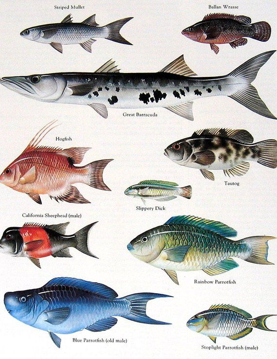

The underwater environment refers to the region below the surface of, and immersed in, liquid water in a natural or artificial feature (called a body of water), such as an ocean, sea, lake, pond, reservoir, river, canal, or aquifer.Some characteristics of the underwater environment are universal, but many depend on the local situation.Liquid water has been present on Earth for most of the history of the planet. The underwater environment is thought to be the place of the origin of life on Earth, and it remains the ecological region most critical to the support of life and the natural habitat of the majority of living organisms. Several branches of science are dedicated to the study of this environment or specific parts or aspects of it. A number of human activities are conducted in the more accessible parts of the underwater environment. These include research, underwater diving for work or recreation, and underwater warfare with submarines. However, the underwater environment is hostile to humans in many ways and often inaccessible, and therefore relatively little explored.
The world ocean is the most visible part of Earth from space. Three quarters of the planet Earth is covered by water. Most of the planet's solid surface is abyssal plain, at depths between 4,000 and 5,500 metres (13,100 and 18,000 ft) below the surface of the oceans. The solid surface location on the planet closest to the centre of the geoid is the Challenger Deep, located in the Mariana Trench at a depth of 10,924 metres (35,840 ft). There is a smaller part of the surface covered by bodies of fresh water and a large volume of underground water in aquifers. The underwater environment is hostile to humans in many ways and therefore little explored. It can be mapped by sonar, or more directly explored via manned, remotely operated, or autonomous submersibles. The ocean floors have been surveyed via sonar to at least a coarse resolution; particularly-strategic areas have been mapped in detail, to assist in navigating and detecting submarines, though the resulting maps may be classified.
Fish are gill-bearing aquatic craniate animals that lack limbs with digits. They form a sister group to the tunicates, together forming the olfactores. Included in this definition are the living hagfish, lampreys, and cartilaginous and bony fish as well as various extinct related groups. The earliest organisms that can be classified as fish were soft-bodied chordates that first appeared during the Cambrian period. Although they lacked a true spine, they possessed notochords which allowed them to be more agile than their invertebrate counterparts. Fish would continue to evolve through the Paleozoic era, diversifying into a wide variety of forms. Many fish of the Paleozoic developed external armor that protected them from predators.
